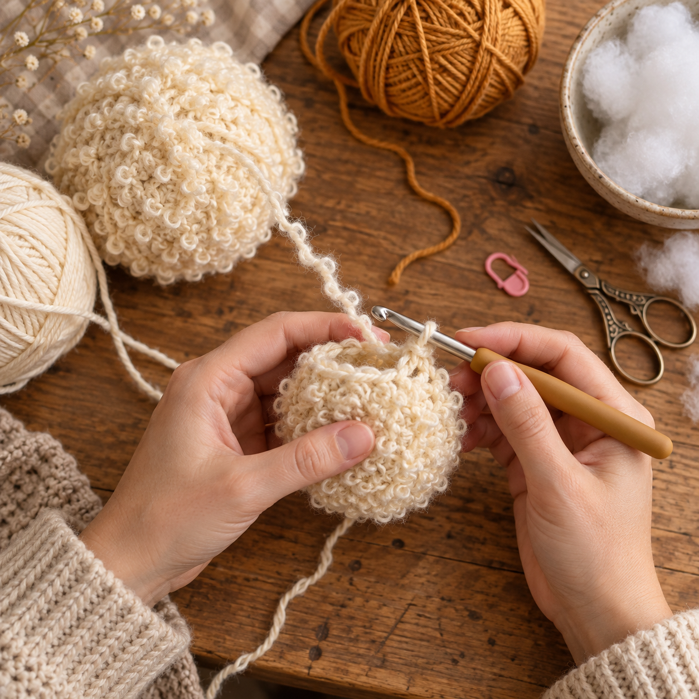
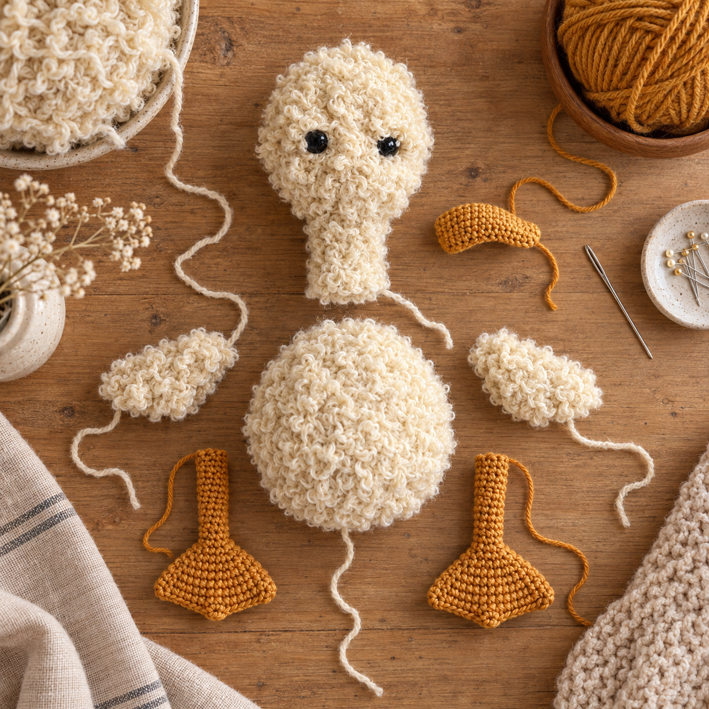
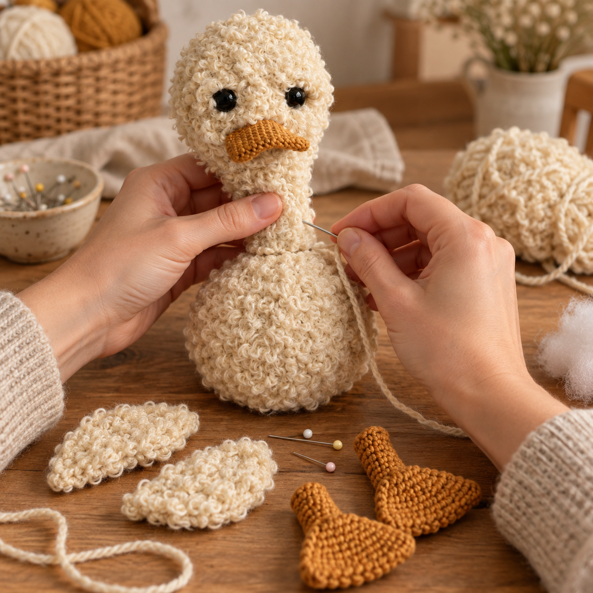

Afkortingen
- V = vaste
- MR = magische ring
- Hv = halve vaste
- L = losse



Dit is Flappie een zacht en eigenwijs eendje met grote flapvoeten, kleine vleugels en een heerlijk chagrijnig snoetje. Door zijn pluizige lijf is hij perfect om mee te knuffelen, al kijkt hij soms alsof hij daar zelf nog even over moet nadenken. Flappie wordt ongeveer 25 centimeter groot. Hij bestaat uit verschillende losse onderdelen die je eerst haakt, vult en daarna aan elkaar naait.

Lees het patroon eerst helemaal door. Het lijf, het hoofd, de hals en de vleugels worden gehaakt met één draad Friends Cotton 8/4 en één draad Steviedoodle tegelijk.
De snavel, benen en voeten worden alleen met Friends Cotton 8/4 gehaakt. Vul alle onderdelen stevig op voordat je Flappie in elkaar zet.
Wil je Flappie aan een jong kind of je hond geven? Borduur de ogen dan met zwart garen in plaats van veiligheidsogen te gebruiken.
Gebruik Steviedoodle Simba, Friends Cotton Oatmilk en haaknaald 6 mm.
Vul het lijf stevig op. Knip het garen af en werk de draad weg.
Gebruik Steviedoodle Simba, Friends Cotton Oatmilk en haaknaald 6 mm.
Plaats de veiligheidsogen tussen toer 8 en 9 met ongeveer 5 tot 6 steken ertussen.
Vul de hals stevig op. Knip het garen af en laat een lange draad over om het hoofd en de hals aan het lijf te naaien.
Gebruik Friends Cotton Ochre en haaknaald 2,5 mm. Haak 13 L. Keer het werk en begin in de tweede L vanaf de haaknaald:
Haak nu verder in het rond.
Knip het garen af en laat een lange draad over om de snavel vast te naaien.
Gebruik Friends Cotton Ochre en haaknaald 2,5 mm.
Vul ieder been op. Knip het garen af en laat een lange draad over om het been vast te naaien.
Gebruik Friends Cotton Ochre en haaknaald 2,5 mm.
Druk de opening plat en haak deze dicht met Hv. Knip het garen af en werk de draad weg.
Gebruik Steviedoodle Simba, Friends Cotton Oatmilk en haaknaald 6 mm.
De vleugels worden heen en weer gehaakt. Keer het werk met 1 L wanneer er ‘keer’ staat.
Keer na de laatste toer niet. Haak V helemaal rondom de vleugel. Haak 3 V in iedere hoek voor een mooie ronde vorm.
Knip het garen af en laat voldoende draad over om de vleugel vast te naaien.
Leg eerst alle onderdelen op hun plaats en zet ze met spelden vast. Zo kun je controleren of alles recht en op de juiste hoogte zit voordat je begint met naaien.
Neem rustig de tijd voor de afwerking. Juist de plaatsing van de snavel, ogen, vleugels en poten geeft Pippin zijn eigenwijze persoonlijkheid.

